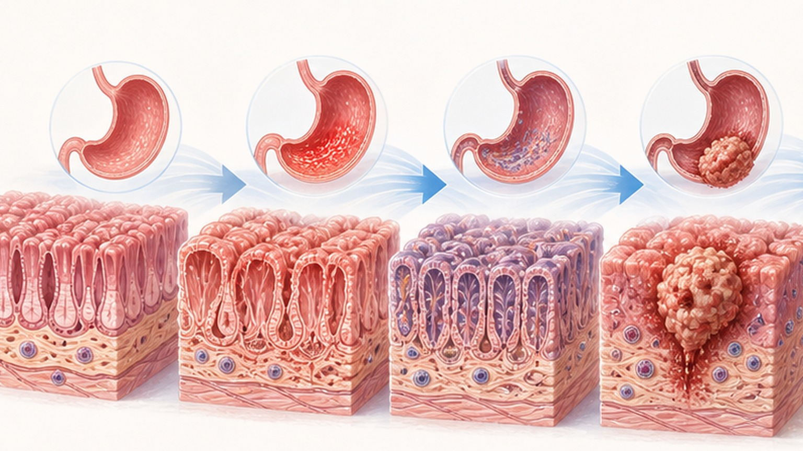
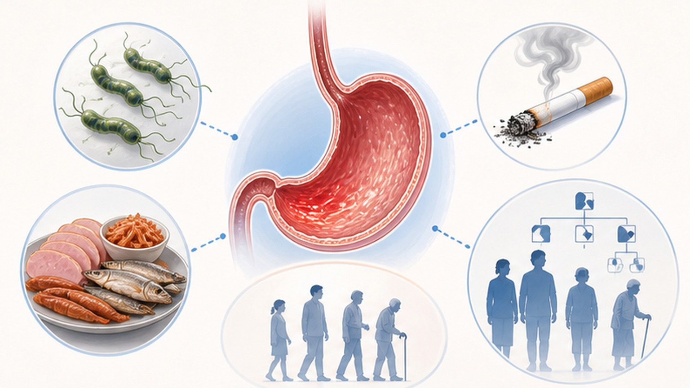
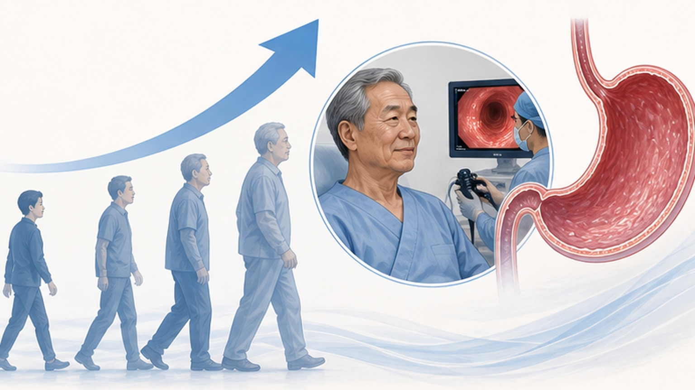
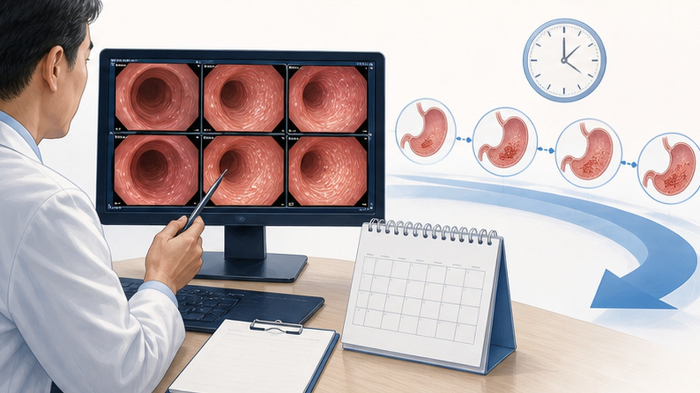

위축성위염 · 장상피화생,
의미와 관리 한눈에
위 점막의 변화가 무엇이고, 위암 위험과 추적 관찰을 어떻게 설계해야 하는지 알아봅니다
한국인 50대 절반 이상이 위축성위염을 가지고 있습니다
나이가 들수록 유병률이 가파르게 올라가는 흔한 위 점막 변화입니다
위축성위염과 장상피화생은 어떤 변화인가
위 점막이 얇아지고(위축) 다른 조직으로 바뀌는(화생) 만성 변화
위축성위염 (Atrophic Gastritis)은 위 점막의 분비샘이 얇아지고 줄어드는 만성 염증성 변화입니다.
장상피화생 (Intestinal Metaplasia)은 위 점막 세포가 위가 아닌 장 (소장·대장형) 점막 세포로 바뀌는 현상으로, 위축성위염이 더 진행된 단계로 봅니다. 두 변화 모두 위암으로 가는 단계적 진행 (Correa sequence)에 포함되지만, 모든 환자가 위암이 되지는 않습니다. 핵심은 정기 내시경 추적과 위험 인자 (H. pylori, 흡연, 짠 음식)의 적극적 관리입니다.
정상 위에서 위암까지 — 단계적 진행
Correa Cascade — 위 점막이 위암에 이르는 단계적 변화 모델

Kimura-Takemoto 분류 — 위축의 범위에 따라 6등급
내시경에서 위축 경계가 어디까지 올라왔는지에 따라 C-1부터 O-3까지 단계별로 표시합니다
진행을 가속하는 6가지 위험 인자
조절 가능한 인자를 찾아 적극적으로 줄이는 것이 추적 관찰의 핵심입니다

나이가 들수록 유병률이 가파르게 올라갑니다
한국인 위축성위염 (AG) · 장상피화생 (IM) 연령별 유병률

H. pylori 제균 — 적응증의 강도별 정리
대한상부위장관·헬리코박터학회 가이드라인 기준 · 위축성위염/장상피화생은 권고적 적응증
위축성위염 · 장상피화생, 추적 관찰 일정
진단 후 정기 내시경으로 변화의 진행 여부와 조기 위암을 함께 확인합니다

진행을 늦추는 생활 관리
위축성위염·장상피화생 자체를 되돌리는 음식은 없지만, 진행 속도와 위암 위험을 줄일 수 있습니다
- 신선한 채소·과일을 매끼 충분히
- 싱겁게 — 국물·찌개 절반만 섭취
- H. pylori 양성이면 적극 제균 치료
- 금연 — 위 점막 자극 가장 강력한 인자
- 규칙적 운동과 적정 체중 유지
- 2~3년 간격 정기 위내시경 추적
- 젓갈·장아찌·짠 발효식품 자주 섭취
- 훈제·태운 음식·가공육 (햄·소시지) 자주
- 과도한 음주 (주 2회 이상 폭음)
- 스트레스 누적·수면 부족 방치
- 증상 없다고 추적 내시경 미루기
- 처방 없이 위염 약 임의 장기 복용
오늘 꼭 기억할 핵심 8가지
위축성위염·장상피화생을 진단받은 분들이 일상에서 실천할 행동 체크리스트
정기적인 검진으로
건강한 위를 지켜가세요
궁금한 점은 언제든 주치의에게 문의해 주세요 — 함께 추적·관리하겠습니다
광교중앙로 298, 4층
토요일 08:30~13:30
같은 자료를 다시 볼 수 있어요